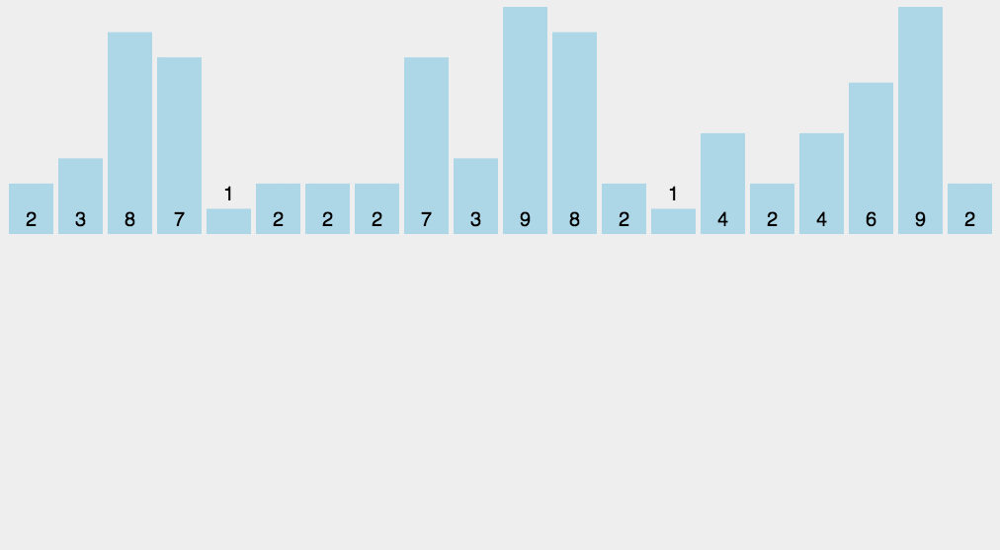

计数排序
计数排序（Counting sort）是一种稳定的线性时间排序算法。该算法于1954年由Harold H. Seward 提出。计数排序使用一个额外的数组\(C\) ，其中第\(i\)个元素是待排序数组\(A\)中值等于\(i\)的元素的个数。然后根据数组\(C\) 来将\(A\)中的元素排到正确的位置。
计数排序不是比较排序，因此时间复杂度不具有\(O(nlogn)\)的下限。当输入元素是\(n\)个0到\(k\)之间的整数时，它的运行时间是\(O(n+k)\)。
原理
计数排序统计序列中元素个数，然后在最小元素到最大元素的范围内，依据元素个数对数组进行重新填充使得整个元素变得有序。动画演示如下：

步骤如下：
- 先找到待排元素的最大最小元素\(maxE\)和\(minE\)。得到计数范围:\(maxE-minE + 1\).
- 统计数组中每个值为\(elem - minE\)的元素个数，存入数组C的第\(elem-minE\)项.
- 对所有的计数累加(从\(C\)中的第一个元素开始，每一项和前一项相加)
- 反向填充目标数组；将每个元素\(i\)放在新数组的第\(C(elem-min)\)项，每放一个元素，计数数组\(C\)自减一。
实现
| void countingSort(int arr[],int len){
// 找到最值
int maxE = arr[0],minE = arr[0];
for(int i=1;i<len;i++){
if(arr[i] > maxE){
maxE = arr[i];
}
if(arr[i] < minE){
minE = arr[i];
}
}
// 范围
int range = maxE - minE + 1;
// 计数数组
int cnt[range];
memset(cnt,0,sizeof(cnt));
// 统计每个元素的次数
for(int i=0;i<len;i++){
cnt[arr[i] - minE]++;
}
// 当前项加上前一项
for(int i=1;i<range;i++){
cnt[i] += cnt[i-1];
}
// 赋值
int output[len];
for(int i=len-1;i>=0;i--){
// 累加后的cnt[arr[i] - minE]表示arr[i]比前cnt[arr[i]-minE]个元素大
// 下标从0开始，因此需要减1
output[cnt[arr[i] - minE] - 1] = arr[i];
cnt[arr[i]-minE]--;
}
// 拷贝
for(int i=0;i<len;i++){
arr[i] = output[i];
}
}
|
习题
习题一
给你两个数组，\(arr1\) 和 \(arr2\)，\(arr2\) 中的元素各不相同，\(arr2\) 中的每个元素都出现在 \(arr1\) 中。对 \(arr1\) 中的元素进行排序，使 \(arr1\) 中项的相对顺序和 \(arr2\) 中的相对顺序相同。未在 \(arr2\) 中出现过的元素需要按照升序放在 \(arr1\) 的末尾。
数组每个元素值不超过1000。
示例
| 输入：arr1 = [2,3,1,3,2,4,6,7,9,2,19], arr2 = [2,1,4,3,9,6]
输出：[2,2,2,1,4,3,3,9,6,7,19]
|
分析
- 数组\(arr2\)是\(arr1\)的子数组，题目要求保证\(arr2\)数组相对顺序的情况下，对\(arr1\)数组进行排序，返回排序结果。
- 本题使用计数思想，对\(arr1\)的每个元素进行计数；
- 要求\(arr2\)的相对顺序不变，因此我们先填充\(arr2\)的元素，再填充\(arr1\)的剩余元素。
代码
| class Solution {
public:
vector<int> relativeSortArray(vector<int>& arr1, vector<int>& arr2) {
vector<int> cnt(1001);
for(auto e: arr1){
cnt[e]++;
}
vector<int> ans(arr1.size());
int index = 0;
// 先填充arr2的元素
for(auto e: arr2){
for(int i=0;i<cnt[e];i++){
ans[index++] = e;
}
cnt[e] = 0;
}
// 再填充arr1减去arr2的元素集
for(int i=0;i<=1000;i++){
for(int j=0;j<cnt[i];j++){
ans[index++] = i;
}
}
return ans;
}
};
|